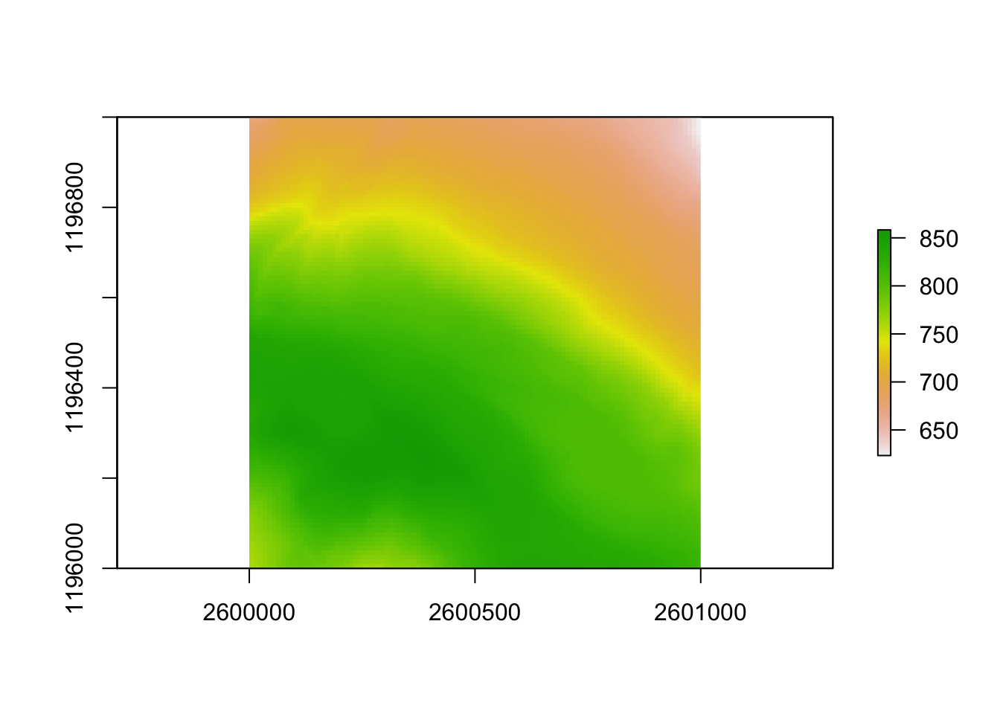
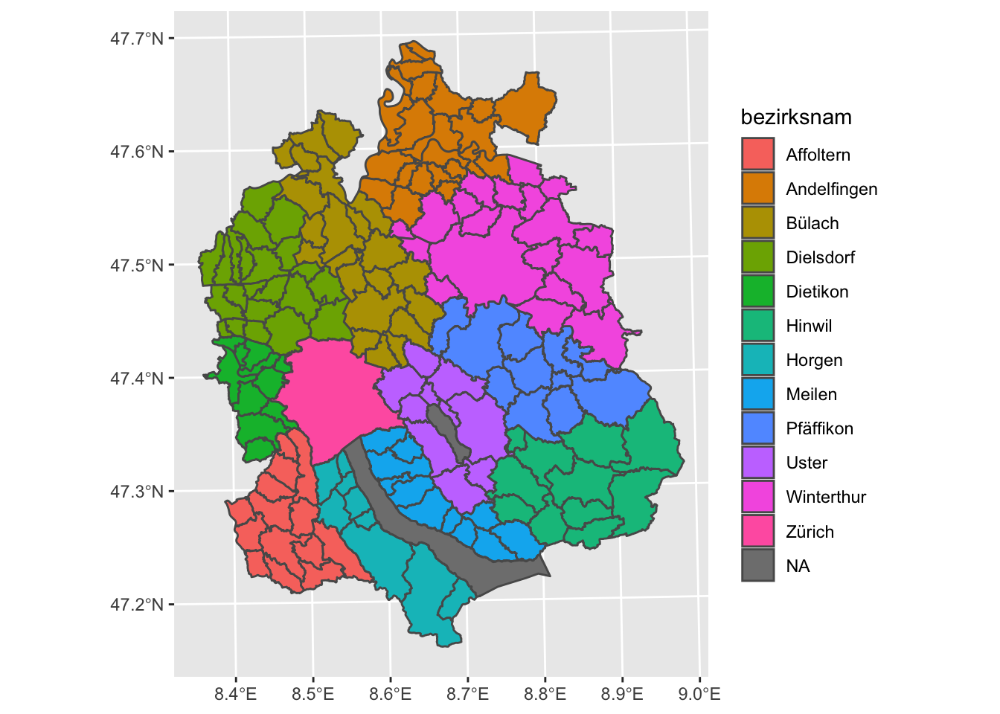
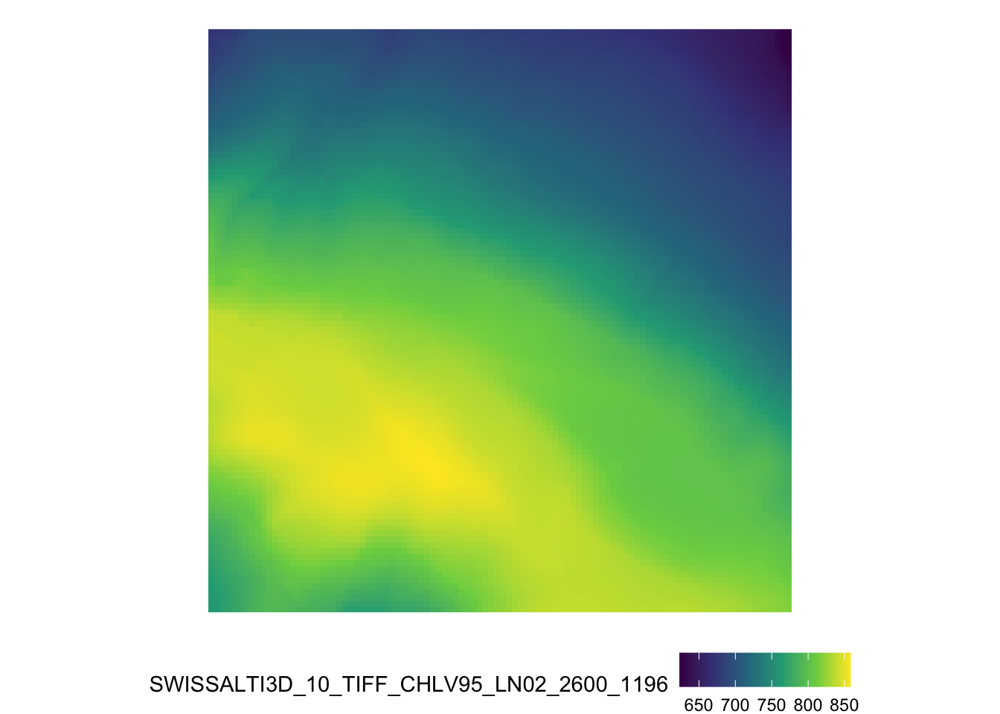
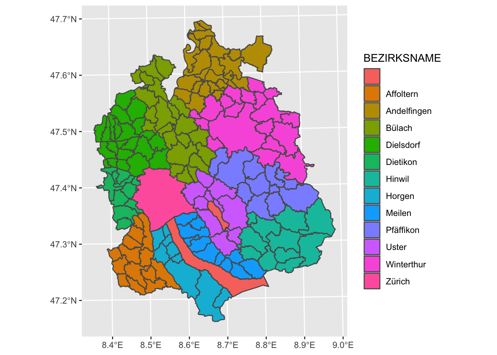
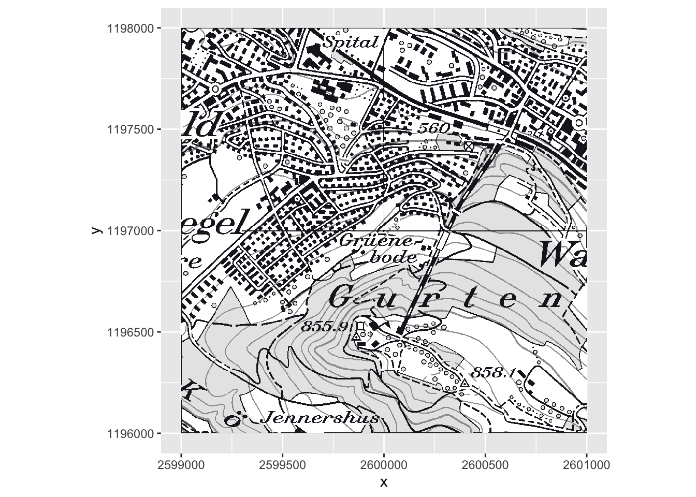

3.1 Static Maps
As we saw in chapter Data, we can quickly visualize geodata by simply calling plot on the dataset.
library(arc2r)
library(sf)
## Linking to GEOS 3.8.1, GDAL 3.1.4, PROJ 6.3.1
library(raster)
plot(gemeinde_zh["bezirksnam"])
plot(swissAlti3D)
This is fine for quick view of the data, but as you want to add more layers, legend etc. using base::plot() becomes complicated. There are many alternative methods to visualizing spatial data, we will showcase our favourite methods here.
3.1.1 Package ggplot2
If you are familiar with ggplot2 you can rejoice: Plotting sf objects has become very easy with this package. If you do not know this package yet, we recommend you familiarize yourself with it first before diving into this chapter. We will continue to work with the datasets used above
3.1.1.1 sf objects
library(ggplot2)
ggplot(gemeinde_zh) +
geom_sf()
In its most basic form, we can visualize the geometry of our sf object.As always in ggplot2, if you want to use a column from your dataset as an input for, say, colour, you need to specify this with aes():
ggplot(gemeinde_zh) +
geom_sf(aes(fill = bezirksnam))
To change the default graticules from WGS84 to a custom Coordinate System, we can use the argument datum in coord_sf and call the EPSG Code of our desired coordinate system.
//todo add chapter on CRS //body ArcGIS Users are usually not familiar with ESPG Codes, we should provide an introduction somewhere and reference this here.
ggplot(gemeinde_zh) +
geom_sf(aes(fill = bezirksnam)) +
coord_sf(datum = 2056)
How we can use our standard ggplot2 methods to polish this plot:
ggplot(gemeinde_zh) +
geom_sf(aes(fill = bezirksnam), colour = "white") +
labs(title = "Gemeinden des Kantons Zürich nach Bezirk",fill = "") +
theme_void() +
theme(legend.position = "bottom")3.1.1.2 raster objects
//todo use a raster object with the same extent as the sf object
While sf objects are very easily integrated in ggplot2, raster data is a little harder. There are various ways to plot a raster object with ggplot2. A simple, adhoc approach is converting the RasterLayer object into a data.frame and then plotting it with geom_raster.
swissAlti3D_df <- as.data.frame(swissAlti3D,xy = TRUE) # xy = TRUE adds the x and y coordinates to our dataframe as columns
# Note the column names of our dataframe
head(swissAlti3D_df)
## x y SWISSALTI3D_10_TIFF_CHLV95_LN02_2600_1196
## 1 2600005 1196995 673.6359
## 2 2600015 1196995 673.6822
## 3 2600025 1196995 674.3226
## 4 2600035 1196995 675.7197
## 5 2600045 1196995 679.8717
## 6 2600055 1196995 684.2903
ggplot(swissAlti3D_df, aes(x, y, fill = SWISSALTI3D_10_TIFF_CHLV95_LN02_2600_1196)) +
geom_raster()
Note that this approach, ggplot is not aware of the coordinate system assigned to our dataset. The x and y coordinates from our dataframe are assumed to be in a cartesian coordinate system. This implies two things:
- This approach only works with datasets in a projected coordinate system (where the raster is assumed to be on a plane)
- We have to specify that the coordinate system in the two direction are equal with
cord_equal()(coord_sf()will not work if we don’t have anysfobjects)
//todo add example of WGS84 raster
ggplot(swissAlti3D_df, aes(x, y, fill = SWISSALTI3D_10_TIFF_CHLV95_LN02_2600_1196)) +
geom_raster() +
scale_fill_viridis_c() +
theme_void() +
coord_equal() +
theme(legend.position = "bottom")
//todo combine sf and raster //body add an example of how sf and raster can be layered. This needs an additional dataset.
3.1.2 Package tmap
While ggplot2 was extended to work with spatial data, the package tmap was specifically designed to create maps. The developer created this package leaning on the “grammar of graphics” approach which is also implemented in ggplot2, so many of the concepts are the same (e.g. the concept of “layers” and using the +-sign). One main difference is that tmap does not use NSE, so column names always need to be quoted.
library(tmap)
tmap_mode("plot") # <- to create static plots
## tmap mode set to plotting
tm_shape(gemeinde_zh) +
tm_polygons(col = "bezirksnam") 
The fact that tmap is designed for maps makes it much easier to add map elements, such as a North Arrow.
tm_shape(gemeinde_zh) +
tm_polygons(col = "bezirksnam") +
tm_compass()
It also means that visualizing a RasterLayer is built in to the package:
tm_shape(swissAlti3D) +
tm_raster()
The most amazing thing about tmap probably is tmap_mode("view"). Run this code and then the two chunks above, you will be amazed. Learn more about this in chapter Interactive Maps.